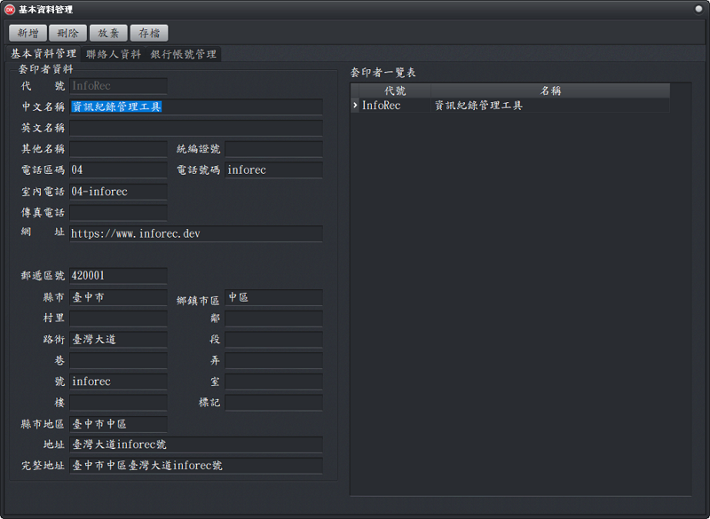
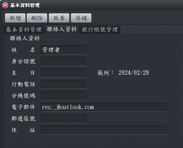
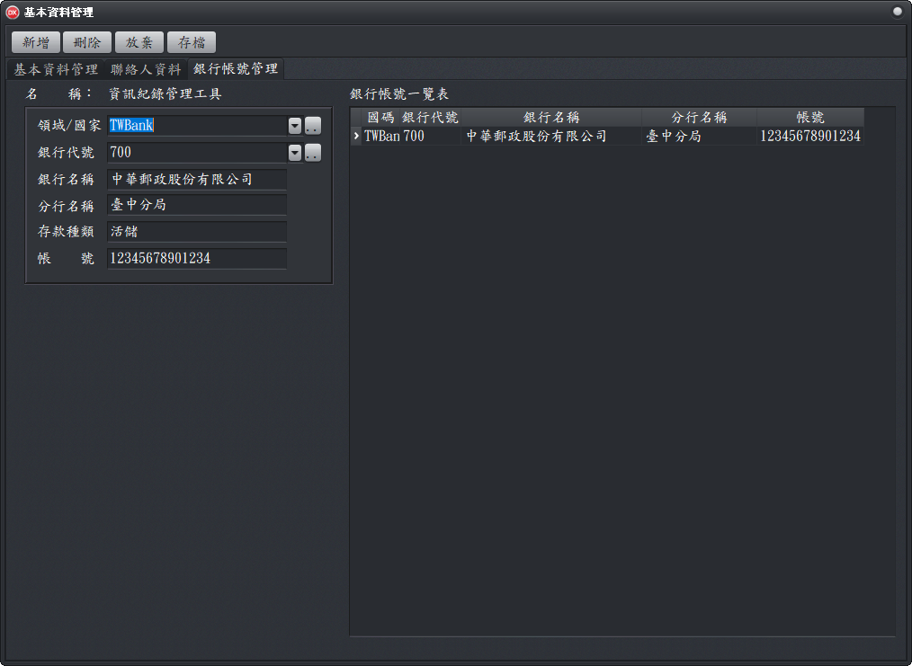

基本資料管理：可以編輯本軟體使用者的相關資料，當套印文件需要使用者的資料時，可由此處取得，因此每個欄位都應該盡可能詳實輸入。基本資料管理
基本資料管理是套印(使用)者的資料，各種文件套印均可由此取得使用者相關資料。


「銀行帳號管理」工作頁：套印金融業相關文件(如支票、存取款單、匯款單..)時，銀行帳號相關資料是必填項目。
- 「基本資料管理」建立後，才可以進入「銀行帳號管理」工作頁，進行銀行帳號相關資料登錄，輸入完成後，請按「存檔」鈕。 。
- 可以輸入銀行代碼(例如700)的方式，即可找出該金融機構(例如中華郵政股份有限公司)相關資料。
